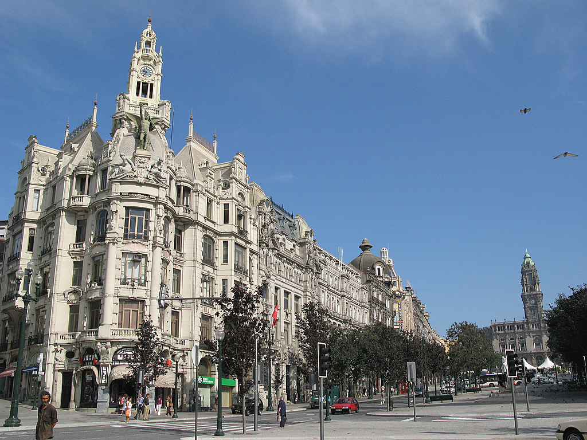

A cidade do Porto
Cidade situada no noroeste de Portugal, banhada pelo rio Douro, é assim um ponto estratégico num plano económico-social detentor de um conjunto arquitetónico de valor excecional. Embora as suas antigas raízes tenham sido preservadas com orgulho, um comércio próspero e estimulante transforma-o numa cidade moderna e a sua tradicional importância como centro industrial não diminui o encanto e carácter dos seus bairrosantigos ou mesmo a agitação das novas avenidas, ladeadas de centros comerciais ou tranquilos blocos residenciais.
Para além de ser classificado como Património Mundial pela UNESCO desde 1996 devido aos seus grandes monumentos e edifícios históricos, foi também eleito como "Melhor Destino Europeu2014" derrotando os outros 19 destinos em competição por diversas razões, uma delas a gastronomia. A fama de se comer bem na cidade também é proveito. Além das tripas à moda do Porto, dos rojões ou do bacalhau à Gomes de Sá, tornaram-se famosas as sandes de presunto da Badalhoca, as de pernil assado da Casa Guedes, os cachorros quentes do Gazela, o Nelson dos Leitões, no Bolhão, ou as bifanas da Conga. Para acompanhar estes deliciosos pratos nada melhor que um bom vinho. É impossível visitar o Porto sem ir às caves, situadas do outro lado do rio, em Gaia, onde os barcos rabelo nos fazem recuar ao tempo em que as pipas eram transportadas do Douro para aqui repousar.
As lojas de vinho amontoam-se com as de souvenirs, numa rua com o melhor ângulo da ribeira. No que respeita a outro tipo de comércio a invicta ainda tem lojas de outros tempos. A Confeitaria do Bolhão (1896), na Rua Formosa, guarda as memórias do tempo em que os fregueses ali tomavam o pequeno-almoço, antes de irem ao mercado, entre muitas outras espalhadas pela baixa da invicta. Para percorrer todos estes locais maravilhosos a cidade do Porto oferece cada vez formas de a conhecer. Percorrer as suas ruas estreitas, com o casario com flores nas janelas e roupa a secar nos estendais, subir aos miradouros, avistar o património usando os antigos elétricos, autocarros panorâmicos, vespas e tuk tuk, segways e carros clássicos que entraram, há poucos meses, nos circuitos turísticos do Porto, tal como os ecológicos Twizy (cujo GPS faz de guia turístico) e, claro para os mais desportistas, existem as bicicletas que podem ser acompanhas de um guia turístico. Tudo isto é de um enorme interesse para todos os participantes do III ENEEQ mas algo que não pode faltar é a movida noturna. Festas, discotecas, copos e música mudaram-se da Boavista e Matosinhos para a Baixa e aqui se continuam a multiplicar os bares. Gente de todas as gerações e nacionalidades deambulam pelos Leões, zona do clássico Piolho, Rua Galeria de Paris, Pç. Filipa de Vilhena, Rua Passos Manuel e Pç. dos Poveiros, entre muitas outras. Não faltam bares temáticos de champanhe, gin, caipirinhas, poncha e ginginha, e cocktails. Há já quem venha de fora para viver esta noite que, dizem, rivaliza com muitas das maiores cidades europeias.
Como podemos ver a cidade do Porto oferece muitas atrações sendo muitas delas não referidas aqui. Monumentos e museus, assim como um calendário cultural cada vez mais preenchido e uma população hospitaleira, constitui assim uma cidade fantástica merecedora de todos estes prémios já ganhos e certamente da tua visita. Esperamos por ti!